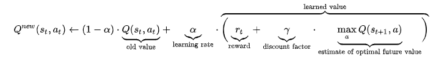

new Q value equals the sum of the previous Q value and the learned value
1.1.4TODO policy pi
random choose an action
choose the optimal policy
1.1.5TODO value update and main function
value update
when the game end, we should update every state we pass through the whole procedure.
we should trace back the whole procedure and update the value by Q function